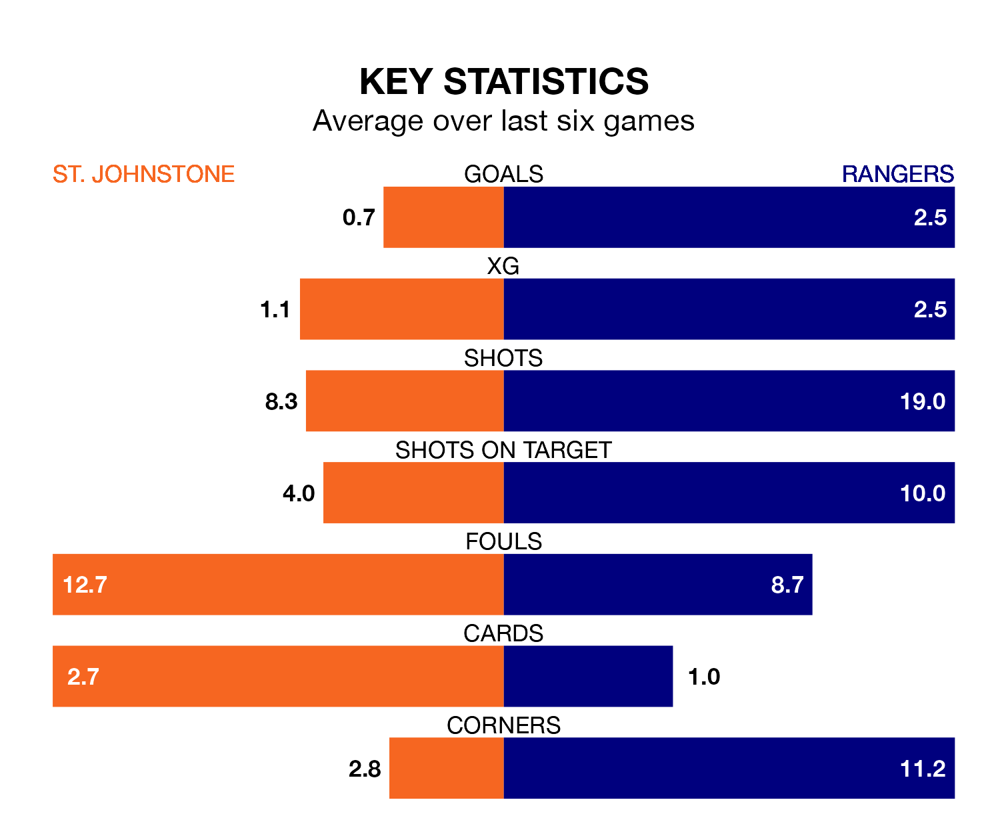

Relegation candidates St. Johnstone face a challenge against high-flying Rangers at McDiarmid Park on Sunday.
St. Johnstone are 10th in the Premiership table, and have picked up five wins and nine draws in their 25 games to date.
Rangers, meanwhile, are top of the standings with 61 points, having won 20 and drawn one.
St. Johnstone are in disappointing form in the Premiership, with one win and three draws from their last six games.
With six wins and no losses over that period, Rangers's form is much better – they have taken 18 points from 18, compared to the Saints' six.
With 53 goals in 25 games so far this season, the away side are the league's second-highest scorers with 2.1 goals per game. And they are conceding fewer than average, letting in 13 goals at a rate of 0.5 per game.
The hosts, meanwhile, are below average scorers, with 0.7 goals per game, compared to a league average of 1.3. They have conceded 1.3 goals per game.
With Jack Butland between the sticks, Rangers can rely on one of the league's safest pair of hands. He has kept 15 clean sheets in his 25 appearances this season, and no 'keeper has prevented the opposition scoring more often in the Premiership.
In St. Johnstone's net, Dimitar Mitov has seven clean sheets in 25 games. He has conceded a goal every 80 minutes, more than twice as often as the 173 minutes between goals for Butland.
In the last 10 years, St. Johnstone and Rangers have played each other on 27 occasions. St. Johnstone won two of them, Rangers 19, and they drew six times.
On average, the Saints scored 0.7 goals and Rangers 2.0 in those matches.
Their last meeting was on December 20, when Rangers won 2-0 at home.
St. Johnstone's last match was on Sunday, a 2-1 loss against Dundee, with Matthew Smith getting the goal for the Saints.
Rangers beat Ross County 3-1 last time out, on Wednesday, with Cyriel Dessers (two) and John Souttar on the scoresheet.
Updated: 12:06 (UTC), 15/02/24